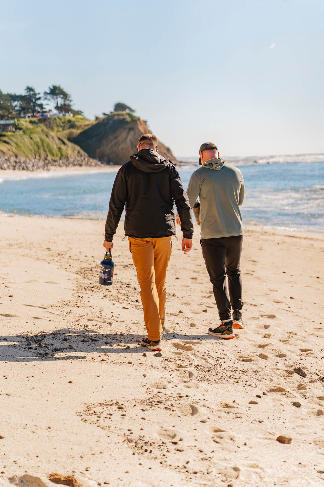
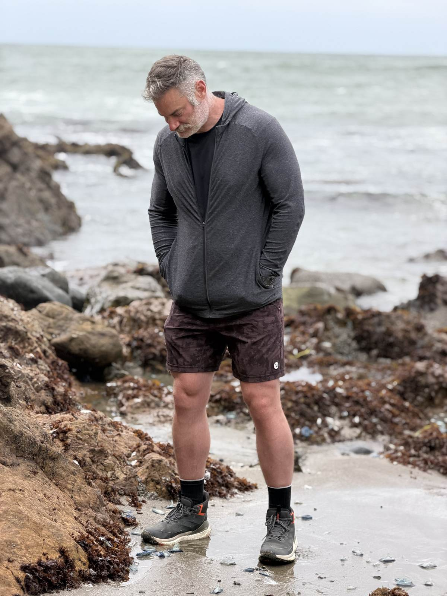
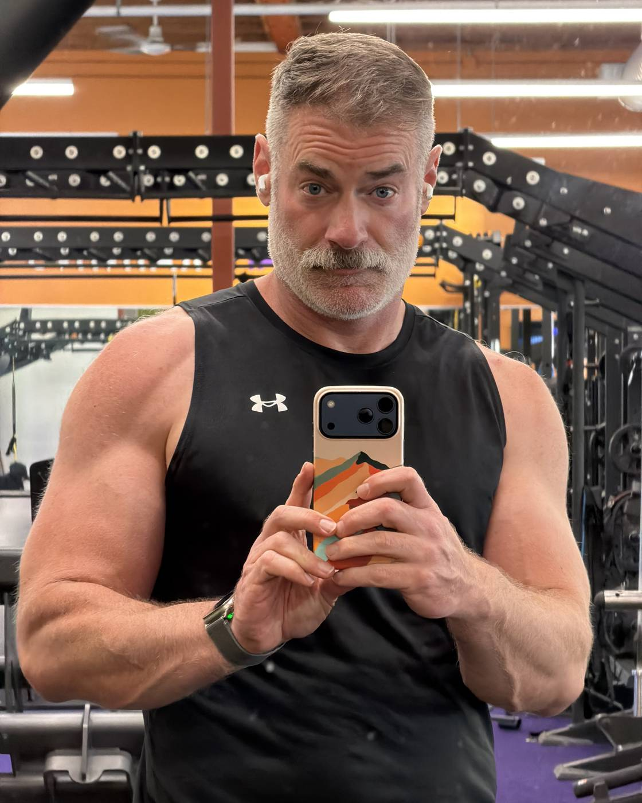
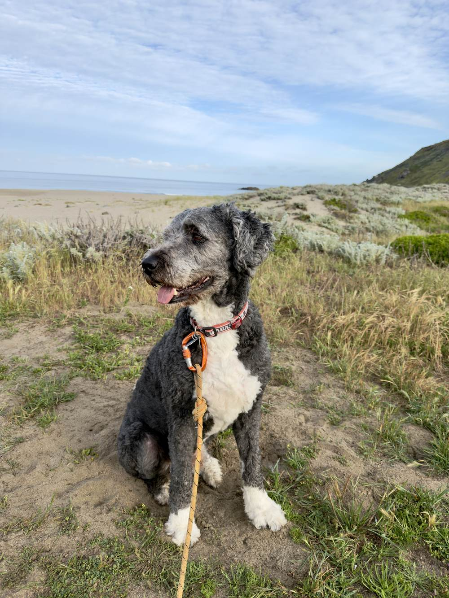

Is this you?
- You're a gay man in your twenties or older, and you would like a man in your life you can really talk with.
- Your career is stuck. Or it's going fine and you still can't sleep.
- Something ended, or nothing has started, and you're done getting coaching from people who mean well but don't help.
- You want a conversation your friends can't give you and connection your therapist shouldn't: warm, direct, and not about them.
Two ways to start.
The Walk
We walk, you talk, I listen, and we explore the possibilities together. Career, the reset you keep putting off, the relationship, the body, the thing you have never said out loud. Boundaries are agreed on before we start.
Another Walk
Same trail or a new one. Book it by text after our first walk.
The Pep Talk
Before the interview, after the breakup, the week you cannot get off the couch. Fifty minutes of straight talk and warm authority from someone who has been through worse and is still standing.
Another Pep Talk
A voice in your corner before the thing. Book it by text after our first talk.
After the first session you have my number. The next one is a text away.
Cash, Apple Cash, or Venmo at the start of each session. No packages, no subscriptions, no invoices. Coaching, not therapy. Adults only.
How it works.
- You fill in the short form below. It reaches my phone within seconds.
- I text you back, usually the same day. We pick a trail and a time that fits your side of the Bay, or a time to talk.
- We meet at the trailhead. Public trail, daylight, your pace. You pay at the start, and then we walk.
- Afterwards I send you one text with the next step we agreed on. That is the whole system.

What Dad brings.
I bring real care, compassion, and coaching. You bring the thing you need to say out loud. We walk through it, together.
- Gay man, who understands both the excitement, dynamics, and pressures of being a gay man in the Bay Area.
- Twenty years running stores, then a region, then operations for a company of over sixty thousand, then a startup. I know what a hard conversation sounds like from many chairs.
- Three kids, one of them the co-designer of an app we shipped together. I have been the dad in the room for a long time.
- Coaching and counsel, not therapy or crisis care. If what you are carrying needs a clinician, I will say so plainly and help you find one.
- What you say on the walk stays on the walk. If a story of ours ever shows up in my writing, it is anonymized, and only if you checked the box.
The ground rules.
- Adults only. Eighteen and over, no exceptions.
- Public trails, in daylight. I tell one person where I'll be, and you're welcome to do the same.
- Coaching and mentorship, not therapy. I'm not a licensed clinician. If you're in crisis right now, call or text 988 first.
- Never at my place or yours. Trails, tables, phone, or video.
- Not a date, not a hookup. Dad is a role, not an invitation.
- What you say on the walk stays on the walk. A story only ever shows up in my writing anonymized, and only if you checked the box.
- Pay at the start of each session. I kindly request 24 hours cancellation notice. Just reach out, never worry.
Where we walk.
You pick, or I do. A few that could work:
Mori Point, Linda Mar Beach to Rockaway, Sweeney Ridge
Sawyer Camp Trail at Crystal Springs, Edgewood, the Coastal Trail
Lands End, the Presidio down to Crissy Field, Ocean Beach
Tilden, Lake Merritt, the Berkeley Marina
The Marin Headlands, Tennessee Valley, Mount Tam
Rancho San Antonio, the Palo Alto Baylands, Alum Rock
Or the neighborhood you already walk. Pep Talks happen by phone, on video, or across a table.

Ask for a walk or talk.
Two minutes. I read every one myself.
Sent.
What happens next: I text you, usually the same day. Nothing is charged until we start.
If you don't hear from me by tomorrow, text me at (650) 557-8474.
Who is Dad.


I'm Jeremy. I write, I coach leaders, I build stuff, I lift, and I love walking, hiking, and backpacking, really anything outdoors. I spent twenty years at Apple and then as a VP, and I am forty-eight, six-foot-five, and rebuilding my own life in public, which turns out to be the most useful thing I have ever had to offer anyone.
I live in Pacifica with a seventy-pound Bernedoodle named Cooper, who is available for walks at no extra charge and negotiates with sandwiches.
More of the story at jeremyrunge.com.
Questions people ask.
Is this therapy?
No. It is a walk with a coach and mentor who has done hard things and will tell you the truth kindly. If you need a clinician, I will say so.
Is this a date?
No. It's coaching, with the ground rules above. If a date is what you're after, this isn't the walk for you.
Is this only for gay men?
It was built with gay men in mind, because that is who kept asking me for it. Anyone who wants my honest counsel is welcome on the trail.
What if it rains?
We walk anyway if you want to. Pacifica rain is mostly a rumor. If it is genuinely miserable we move to a table and a coffee. Same price, same talk.
Can I bring my dog?
Yes.
How do I pay?
Cash, Apple Cash, or Venmo at the start of each session.
What if I need to cancel?
I kindly request 24 hours cancellation notice. Just reach out, never worry.
Can we do this more than once?
Most people do. After the first walk we talk about a rhythm that fits, if you want one. The next one is a text away.